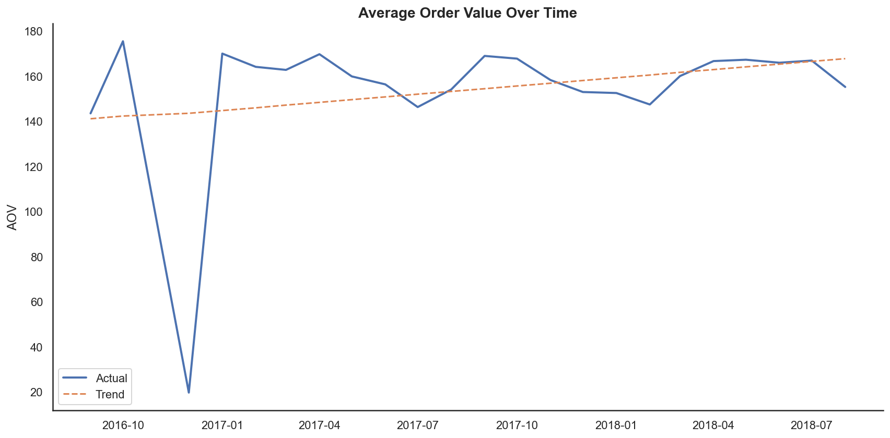
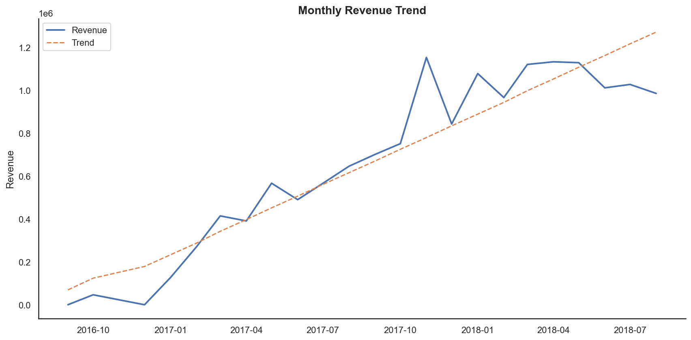
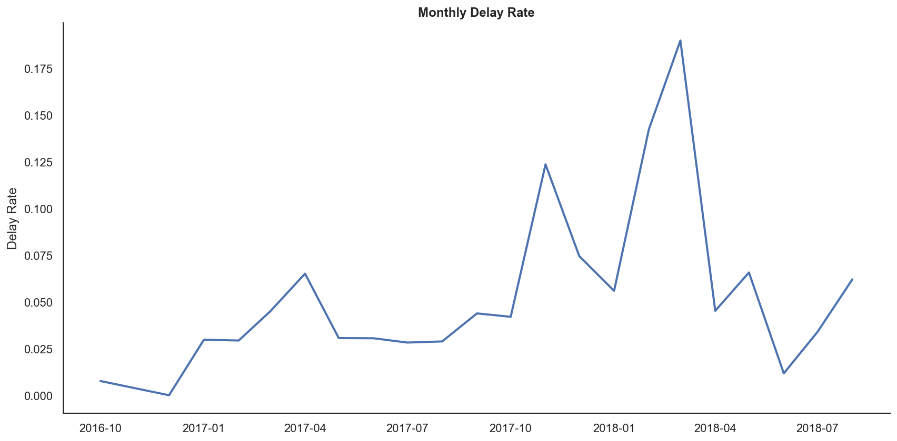
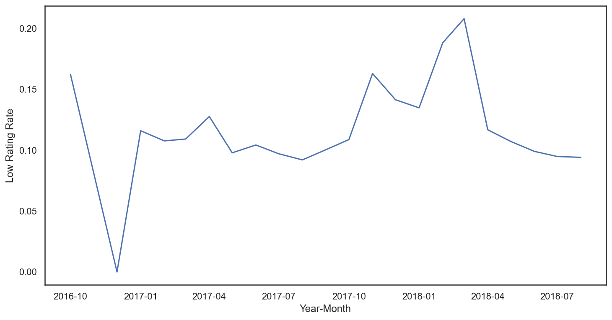
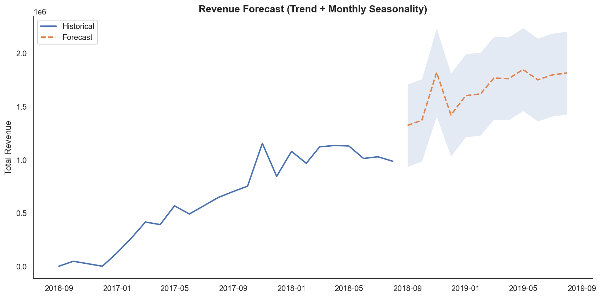

Commercial Analytics Case
Kommersiell analyse og omsetningsprognose
Fra rådata til
beslutningsgrunnlag
Analyse av ~100 000 ordre i den brasilianske e-commerce plattformen Olist — med fokus på leveringsprestasjon, omsetningsprognoser og operasjonell risiko.
Executive Summary
Dette prosjektet analyserer kommersiell ytelse i den brasilianske e-commerce plattformen Olist. Målet er å identifisere hvilke faktorer som påvirker kundetilfredshet, omsetning og operasjonell risiko, og oversette analysen til konkrete forretningsanbefalinger.
Analysen kombinerer SQL-datamodellering, statistisk modellering i Python, tidsserieanalyse og scenarioanalyse.
Leveringsforsinkelser er den enkelt sterkeste prediktoren for lav kundevurdering — og en faktor operasjonell ledelse direkte kan påvirke. En forsinket ordre øker sannsynligheten for lav rating fra 9 % til 59 %.
Forretningskontekst
Olist er en brasiliansk markedsplass som kobler selgere og kunder via én felles plattform. Selskapet opplever varierende leveringsprestasjon, stigende ordrevolum og usikkerhet rundt fremtidig omsetning.
Beslutningsspørsmål: Hva driver kundetilfredshet, og hva kan ledelsen gjøre med det?
Datasettet inneholder omtrent 100 000 ordre med informasjon om ordre, produkter, betalinger, anmeldelser og leveringsdatoer.
Data og datamodell
Databasen ble strukturert som en stjernemodell i PostgreSQL — med en sentral faktatabell omgitt av dimensjonstabeller. Dette muliggjorde effektive joins på tvers av ordre, kunder, produkter og geografi.
customer_id FK
total_order_value
delivery_time_days
delay_days · delay_flag
avg_review_score
low_rating_flag
repeat_customer_flag
category_macro
order_month
PostgreSQL — Faktatabell med feature engineering
Rådata fra åtte tabeller ble transformert til én analyseklar faktatabell gjennom iterative CTE-baserte builds. Under er kjernetransformasjonen:
kode
-- Aggreger order_items til ordre-nivå og beregn forsinkelse
CREATE TABLE fact_orders_v3 AS
WITH order_items_agg AS (
SELECT
order_id,
SUM(price) AS total_price,
SUM(freight_value) AS total_freight,
COUNT(order_item_id) AS item_count
FROM dim_order_items
GROUP BY order_id
),
reviews_agg AS (
SELECT order_id,
AVG(review_score) AS avg_review_score
FROM vw_reviews_clean -- deduped view (814 duplikater fjernet)
GROUP BY order_id
)
SELECT *,
total_price + total_freight AS total_order_value,
(order_delivered_customer_date::date
- order_purchase_timestamp::date) AS delivery_time_days,
(order_delivered_customer_date::date
- order_estimated_delivery_date::date) AS delay_days,
(order_delivered_customer_date::date
> order_estimated_delivery_date::date)::int AS delay_flag
FROM fact_orders_v2
WHERE order_status = 'delivered'
AND order_delivered_customer_date >= order_purchase_timestamp;PostgreSQL — Feature engineering
kode
-- Atferdsvariabler og rating-flagg
CREATE TABLE fact_orders_v4 AS
SELECT *,
CASE WHEN avg_review_score <= 2 THEN 1 ELSE 0 END AS low_rating_flag,
CASE WHEN avg_review_score >= 4 THEN 1 ELSE 0 END AS high_rating_flag,
CASE WHEN customer_order_number > 1 THEN 1 ELSE 0 END AS repeat_customer_flag,
EXTRACT(month FROM order_purchase_timestamp) AS order_month
FROM (
SELECT *,
ROW_NUMBER() OVER (
PARTITION BY customer_id
ORDER BY order_purchase_timestamp
) AS customer_order_number -- Ordrenummer i rekken per kunde
FROM fact_orders_v3
) sub;PostgreSQL — Makrokategorier
kode
-- Aggreger 70+ kategorier til 8 meningsfulle makrogrupper
CREATE TABLE dim_category AS
SELECT
product_category_name,
product_category_name_english,
CASE
WHEN product_category_name_english IN (
'computers','computers_accessories','electronics',
'telephony','tablets_printing_image','consoles_games',
'audio','fixed_telephony'
) THEN 'electronics_tech'
WHEN product_category_name_english IN (
'fashion_male_clothing','fashion_female_clothing',
'fashion_shoes','fashion_bags_accessories',
'watches_gifts'
) THEN 'fashion'
WHEN product_category_name_english IN (
'furniture_decor','furniture_living_room',
'housewares','home_appliances','bed_bath_table'
) THEN 'home_furniture'
WHEN product_category_name_english IN (
'health_beauty','perfumery','diapers_and_hygiene'
) THEN 'beauty_health'
WHEN product_category_name_english IN (
'sports_leisure','toys','cool_stuff','musical_instruments'
) THEN 'sports_leisure'
WHEN product_category_name_english IN (
'books_general_interest','books_technical',
'books_imported','dvds_blu_ray','music'
) THEN 'books_media'
ELSE 'other'
END AS category_macro
FROM dim_product_category;Prediktiv analyse
Logistisk regresjon: Forsinkelse → Lav kundevurdering
En logistisk regresjonsmodell ble brukt for å estimere sannsynligheten for lav kundevurdering (≤ 2 stjerner), med delay_days, total_order_value og category_macro som forklaringsvariabler.
kode
import statsmodels.api as sm
import numpy as np
# Forklaringsvariabler
X = df[['delay_days', 'total_order_value']]
X = sm.add_constant(X)
y = df['low_rating_flag']
model_delay = sm.Logit(y, X).fit()
print(model_delay.summary())
# Odds ratios — effekt i multiplikator
np.exp(model_delay.params)
# Predikert sannsynlighet: 0, 5 og 10 dagers forsinkelse
new_data = pd.DataFrame({
'delay_days': [0, 5, 10],
'total_order_value': df['total_order_value'].mean()
})
new_data = sm.add_constant(new_data, has_constant='add')
pred = model_delay.predict(new_data)
# Resultat:
# P(lav rating | ingen forsinkelse) ≈ 0.09
# P(lav rating | 10 dagers forsinkelse) ≈ 0.59delay_days-koeffisienten tilsvarer en odds ratio på ~1.3 per dag — altså øker oddsene for lav rating med ~30 % for hver dag over estimert leveringstid. Effekten er robust på tvers av produktkategorier og ordrestørrelser.
Modell med makrokategorier
kode
# Modell inkludert kategori som forklaringsvariabel
X_macro = pd.get_dummies(
df[['delay_flag', 'total_order_value', 'category_macro']],
drop_first=True
)
X_macro = sm.add_constant(X_macro).astype(float)
model_macro = sm.Logit(y, X_macro).fit()
print(model_macro.summary())
np.exp(model_macro.params)Tidsserieanalyse og prognose
Operasjonelle KPIer over tid
kode
import pandas as pd
import seaborn as sns
import matplotlib.pyplot as plt
import statsmodels.api as sm
sns.set_theme(style="white")
plt.rcParams["figure.figsize"] = (12, 6)
# Hent månedlige KPIer fra PostgreSQL
monthly_kpis = pd.read_sql(
"SELECT * FROM public.monthly_kpis", engine
)
# AOV-trend
aov["time_index"] = range(len(aov))
X = sm.add_constant(aov["time_index"])
model = sm.OLS(aov["aov"], X).fit()
aov["trend"] = model.predict(X)



Omsetningsprognose: Trend + sesong
kode
# Trend + sesong (månedsdummyer)
monthly_kpis["time_index"] = range(1, len(monthly_kpis) + 1)
monthly_kpis["month"] = monthly_kpis["year_month"].dt.month.astype("category")
X = pd.get_dummies(
monthly_kpis[["time_index", "month"]],
drop_first=True, dtype=float
)
X = sm.add_constant(X)
model_trend_season = sm.OLS(
monthly_kpis["total_revenue"], X
).fit()
print(f"R² = {model_trend_season.rsquared:.3f}") # → 0.953
print(f"AIC trend-only: {model_trend.aic:.1f}")
print(f"AIC trend+season: {model_trend_season.aic:.1f}")
# 12-måneders prognose med 95 % prediksjonsintervall
future_pred = model_trend_season.get_prediction(future_X)
future_ci = future_pred.summary_frame(alpha=0.05)
Trend + sesong-modellen slår ren trendmodell på AIC, noe som bekrefter at sesongmønsteret er reelt og bør inkluderes i prognoser.
Scenarioanalyse
Effekten av redusert leveringsforsinkelse ble simulert basert på observert fraktkostnadsdifferanse mellom forsinkede og ikke-forsinkede ordre (≈ 2,63 enheter per ordre).
kode
baseline_delay_rate = fact_orders["delay_flag"].mean()
total_orders = len(fact_orders)
extra_cost_per_delay = freight_delay - freight_no_delay # ≈ 2.63
scenarios = [0.02, 0.05, 0.08]
results = []
for reduction in scenarios:
new_delay_rate = baseline_delay_rate * (1 - reduction)
avoided_delays = total_orders * (baseline_delay_rate - new_delay_rate)
cost_savings = avoided_delays * extra_cost_per_delay
results.append({
"Reduksjon %": reduction * 100,
"Unngåtte forsinkede ordre": round(avoided_delays),
"Fraktkostnadsbesparelse": round(cost_savings)
})
scenario_table = pd.DataFrame(results)| Reduksjon i forsinkelser | Unngåtte forsinkede ordre | Kostnadsbesparelse | Relativ effekt |
|---|---|---|---|
| 2 % | 129 | 339 | |
| 5 % | 322 | 847 | |
| 8 % | 515 | 1 355 |
Anbefalinger
Begrensninger
- Analysen er begrenset til perioden 2016–2018
- Manglende kostnadsdata gjør full marginanalyse vanskelig
- Kundelojalitet ble modellert som binær flagg — mer granulær CLV-analyse ville vært neste steg
- Ekstern validering av prognosen er ikke gjennomført